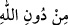

Adama doğru ilerleyince, hayvanlar oturdukları yerden kalkıp kaçtılar. Bunun üzerine
adam, namazını kısa kesti. Bana:
“–Ey Ebü’l-Feyz, eğer için saf ve temiz olsaydı, bu hayvanlar seni arzularlar, dağlar
sana boyun eğerdi.” dedi. Ona:
“–Şayet saf olsaydın” sözünün mânâsı nedir?” dedim.
“–Allah, seni isteyene kadar, Allah için ihlas ve samimiyet üzere olmandır.” dedi.
Ben:
“–Buna neyle ulaşılır?” diye sordum. Adam:
“–Kalbinden şirki çıkardığın gibi, halkın muhabbetini de çıkarmadıkça buna
ulaşamazsın.” dedi. Ben:
“–Vallahi, benim bunu yapmam çok zor.” deyince adam:
“–Bu, ârifler için amellerin en kolayıdır.” dedi.
Mutlak olarak yaratılanları dost tanımak, dalâlete sebep olunca; cinlerden veya
insanlardan olan şeytanları dost edinmenin sapıklığa düşme bakımından derecesinin ne
olduğunu var sen düşün. Bu sebeple Allah’ı sevmek ve O’nun muhabbetine sarılmak
gerekir. Allah Teâlâ’nın muhabbetini bırakıp başka şeyleri sevenlere yazıklar olsun.
Allah bu kimseleri ayette (  ) “Allah’dan başka, Allah’ı bırakıp da” ifadesiyle
zemmetmiştir.
Allah’tan, bize kendi muhabbetini nasip ettikten sonra kalbimizi kaydırmamasını ve
bizi ibadet ve itaatinin yoluna sevk etmesini niyaz ederiz.
[22]. Aclûnî, I, 412
[23]. Aclûnî, I, 469
[24]. Kenzü’l-ummâl, VII, 583; Terğîb, I, 236. Tirmizî, Salat, 162. İbn Mâce,
Mesâcid, 17
[25]. Buhârî, Ezân, 30; Müslim, Mesâcid, 247, 249; Nesâî, İmâmet, 42; Muvatta,
Cemaat, 1; Müsned, II, 65, 112, 475, 485, 501, 520, 525; III, 55, VI, 49